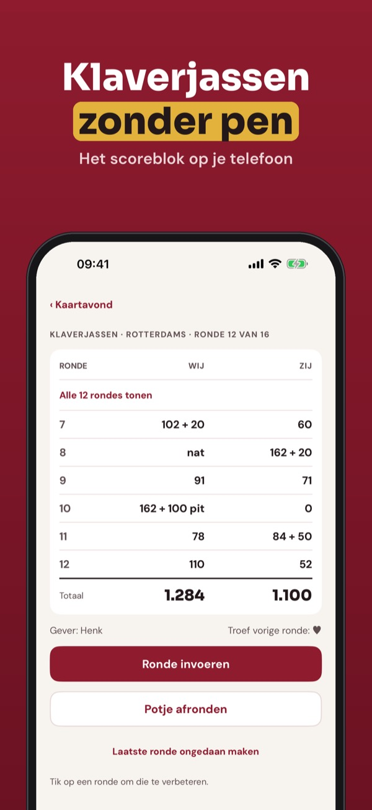
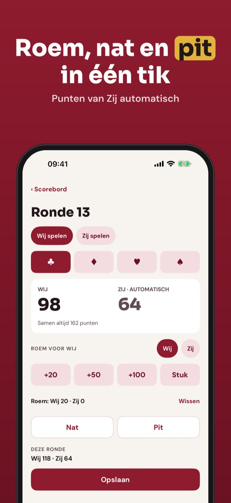
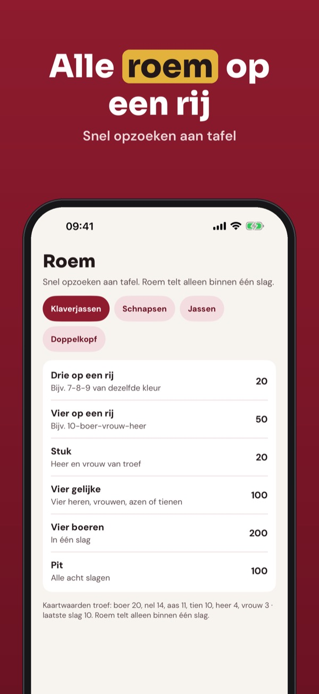
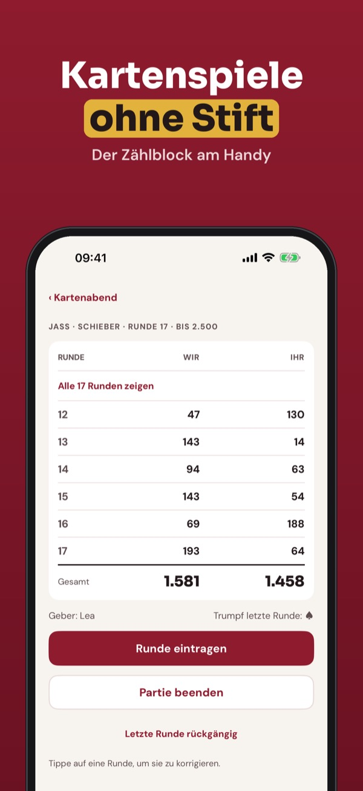
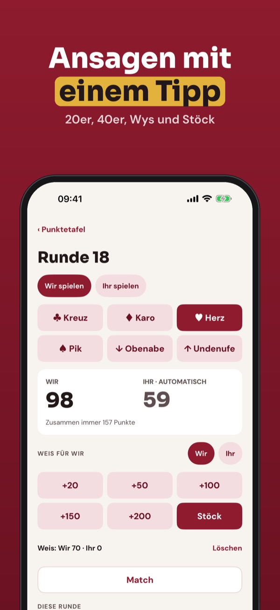
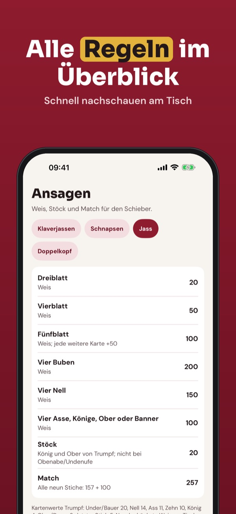

Roem, nat en pit automatisch
Houd de stand bij van je potje klaverjassen: roem, nat en pit worden automatisch verwerkt. Ook voor Schnapsen, Jassen en Doppelkopf – zonder internet.



Kaartblok is het digitale scoreblok voor klaverjassen en andere kaartspellen. Je speelt met je eigen kaarten, Kaartblok telt.
Eén spel naar keuze, de roemkaart en de laatste 5 potjes kun je zonder aankoop gebruiken. De volledige versie is een eenmalige aankoop voor alle vier spellen, clubavonden en statistiek. Geen abonnement.
Kaartblok is een scoreblok en geen kaartspel of gokspel. Huisregels verschillen per club; controleer jullie variant. Niet verbonden aan een bond of club.
Terms of Use (EULA): https://www.apple.com/legal/internet-services/itunes/dev/stdeula/
Privacy: https://baytechbv.github.io/privacy/kaartblok-eu/
Jass, Doppelkopf und Bummerl
Zähle Schnapsen, Jass und Doppelkopf ohne Stift und Papier: Bummerl, Wys und Stöck, Re und Kontra werden automatisch addiert – auch ohne Internet.



Kaartblok ist der digitale Zählblock für Kartenspiele: Schnapsen, Jass (Schieber), Doppelkopf und Klaverjassen. Du spielst mit deinen eigenen Karten, Kaartblok zählt.
Ein Spiel deiner Wahl, die Regelübersicht und die letzten 5 Partien kannst du ohne Kauf nutzen. Die Vollversion ist ein Einmalkauf für alle vier Spiele, Vereinsabende und Statistik. Kein Abo.
Kaartblok ist ein Zählblock und kein Karten- oder Glücksspiel. Hausregeln unterscheiden sich; prüfe eure Variante. Nicht mit Verbänden oder Vereinen verbunden.
Terms of Use (EULA): https://www.apple.com/legal/internet-services/itunes/dev/stdeula/
Privacy: https://baytechbv.github.io/privacy/kaartblok-eu/